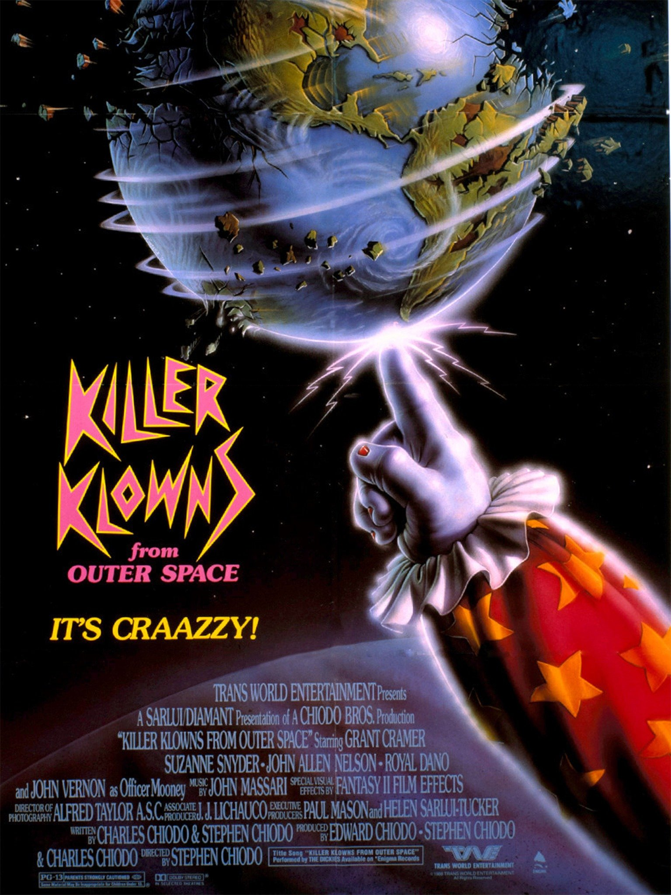
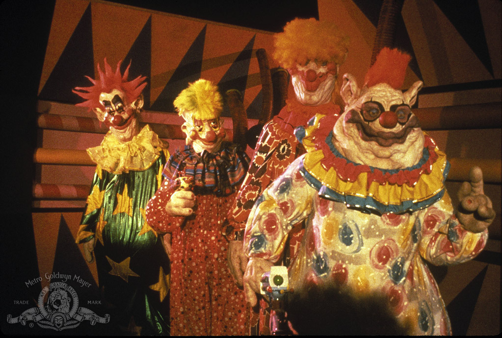
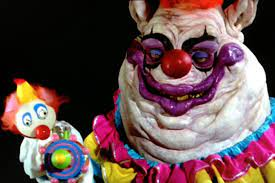

Colum 1
Killer Klowns from Outer Space is a 1988 American science fiction horror comedy film written, directed and produced by the Chiodo Brothers, and starring Grant Cramer, Suzanne Snyder, John Allen Nelson and John Vernon.
Colum 2
It is the only film to be written and directed by the Chiodo Brothers, who also created the practical effects and makeup for the film. The film is about a clan of evil aliens from an unknown region, who all resemble circus clowns.
Colum 3
They arrive on Earth and invade a small town in order to capture, kill, and harvest the human inhabitants to use as sustenance.